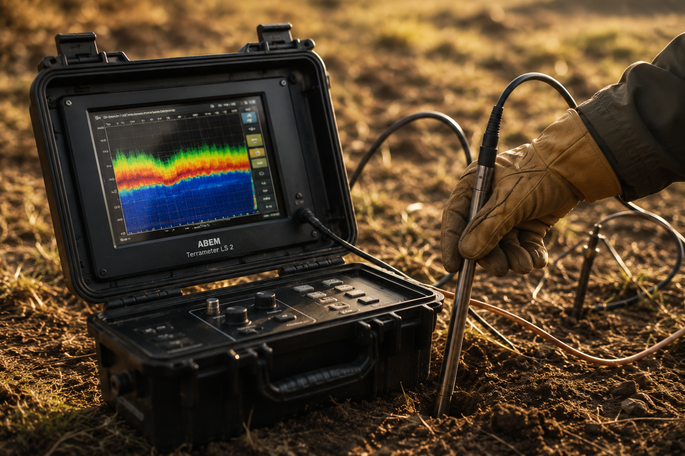

Vízadó rétegek felmérése
Modern mérőeszközökkel segítek meghatározni a vízadó rétegek helyét, hogy a fúrás célzottan és költséghatékonyan történjen.
Kriskó Balázs - kútfúró
Megbízható kútfúrás, szivattyú telepítés és komplett vízellátási megoldások családi házak és vállalkozások számára Környén és 50 km-es körzetben.
Ajánlatot kérek →
Modern mérőeszközökkel segítek meghatározni a vízadó rétegek helyét, hogy a fúrás célzottan és költséghatékonyan történjen.
Precíz, tiszta és hatékony kútfúrás különböző átmérőkkel és mélységekben, az Ön igényeire szabva.
Komplex gépészettel
Teljes körű szivattyú telepítés és gépészeti megoldások a megbízható vízellátás érdekében.
Munkavégzés elsősorban 50 km-es körzetben, de egyedi megállapodás alapján távolabbi helyszíneken is.
Vegye fel velem a kapcsolatot, és kérjen ingyenes helyszíni felmérést, kötelezettségek nélkül.